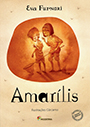

Prêmio 30 melhores livros infantis do ano Crescer 2014
- Eloísa e os bichos Pulo do Gato 27,50 Com o pai, Eloísa se muda para uma nova cidade. Enquanto ele procura emprego, ela vai para a escola, onde se sente um bicho estranho. Conforme ela descreve seus incômodos, as ilustrações mostram Eloísa cercada por bichos gigantes. Entre os colegas, por exemplo, havia gafanhoto, lesma, borboleta... Fazendo uso de imagens fantásticas, o livro revela sentimentos recorrentes em situações de mudança. Lançado na Colômbia em 2009, o livro está na lista White Raven da Biblioteca de Munique e entre os melhores do banco de livros da Venezuela. O texto é do colombiano Jairo Buitrago e as imagens de Rafael Yockteng. A partir de 6 anos. Jairo Buitrago Autor e ilustrador colombiano, Jairo Buitrago tem obras publicadas em vários países. Em parceria com Rafael Yockteng (responsável pelas ilustrações de Eloísa e os bichos), ganhou o em 2007 o prêmio de álbum ilustrado pelo Fondo de Cultura Económica de México, com o livro Camino a casa. Esse título também foi selecionado para fazer parte da lista de honra do IBBY (International Board on Books for Young People), um dos maiores prêmios mundiais para publicações infantojuvenis. Além de atuar no mercado editorial, Jairo Buitrago promove oficinas de literatura e cinema (voltados para crianças em situação de risco em todo território colombiano) e já trabalhou como roteirista de programas infantis. Eloísa e os bichos marca sua estreia no mercado editorial brasileiro. Rafael Yockteng CizVFx0JhF8 Ele nasceu em Lima, no Peru, em 1976. Em 1980 mudou-se com a família para Colômbia, onde estudou design gráfico. Tendo ilustrado diversos livros infantis, Yockteng recebeu no ano 2000 o prêmio Utopía, concedido pelo IBBY (International Board on Books for Young People). Em 2007, recebeu o prêmio de álbum ilustrado pelo Fondo de Cultura Económica de México, com o livro Camino a casa, escrito por Jairo Buitrago (que assina o texto de Eloísa e os bichos). Esse título, vale dizer, também foi selecionado para fazer parte da lista de honra do IBBY. Yockteng, que vive atualmente na Colômbia, já ilustrou livros para editoras de vários países do mundo e vem se consagrando como artista especializado em literatura infantil. Eloísa e os bichos é o primeiro livro ilustrado por ele a ser lançado no Brasil. https://www.flickr.com/photos/yockteng/ CizVFx0JhF8
- A parte que falta Cosac Naify 43 O protagonista desse livro é um ser que parece uma circunferência, mas com uma parte faltando. Por isso, não se sentia feliz. Partiu, então, em busca desse triângulo que o completaria. A procura mesclava momentos difíceis e deliciosos, que incluíam torrar ao sol, refrescar-se com a chuva e conhecer várias criaturas pelo mundo. Certo dia, ele encontra a tal parte. Mas e aí? Será que assim alcançaria a felicidade plena? Escrito com breves sentenças e ilustrado com traços pretos simples, o livro é de autoria do renomado autor norte-americano Shel Silverstein (1930-1999), que teve três obras entre os Melhores da CRESCER: A Árvore Generosa, Quem Quer Este Rinoceronte e Fuja do Garabuja. A partir de 3 anos. Shel Silverstein Ele nasceu em 1930 em Chicago, nos Estados Unidos. Renomado escritor infantojuvenil, publicou suas primeiras histórias num jornal militar, enquanto servia o exército na Coreia, nos anos 1950. Colaborou por alguns anos para a revista Playboy e ganhou notoriedade internacional com um cartoom que representa um prisioneiro acorrentado à parede pelos pés e pelos punhos, dizendo a outro acorrentado: “Pssst! Tenho um plano!”. Em 1961, estreou com um romance que despertou a curiosidade de um editor de livros infantis. Dois anos depois, Shel Silverstein lançou sua primeira publicação para crianças, Leocádio, o leão que mandava bala (lançado no Brasil em 2003) e, no ano seguinte, lançou A árvore generosa, obra que já vendeu milhões de exemplares pelo mundo e o consagrou como autor. Além das obras infantis, Shel Silverstein escreveu algumas peças de teatro, roteiros de cinema e letras de canções, especialmente em estilo country. Algumas obras do autor, que faleceu em 1999, já figuraram nas listas dos Melhores da Crescer. São elas: A árvore generosa, Quem quer este rinoceronte e Fuja do Garabuja, todas publicadas no Brasil pela Ed. Cosac Naify. Shel Silverstein J4osf0vi6iE J4osf0vi6iE
- Caras animalescas Cia. das Letrinhas 37,50 “Vocês já repararam que existem pessoas que se parecem com alguns animais?” Após o convite feito na primeira página do livro, os autores apresentam vários personagens que se parecem com bichos. É o caso, por exemplo, da sra. Maricota, que tem cara de gaivota, o sr. Sodré, que tem cara de jacaré e a sra. Deodata, que tem cara de gata. Diversão garantida, Caras Animalescas marca o final da chamada Trilogia do Retrato, feita a quatro mãos pelo escritor Ilan Brenman e pelo artista plástico Renato Moriconi. Os outros títulos da trilogia – Telefone Sem Fio e Bocejo – também marcaram presença nas listas dos Melhores da CRESCER. A partir de 2 anos. Ilan Brenman e Renato Moriconi Ele nasceu em Israel em 1973 e, ainda criança, estabeleceu-se no Brasil com a família. Pai de duas meninas, Lis e Iris, Ilan Brenman é psicólogo formado pela PUC de São Paulo e doutor pela faculdade de Educação da USP. Ainda nos tempos de faculdade, durante um estágio, ele teve a ideia de contar uma história para ocupar as mentes de crianças de três anos. Diante do intenso brilho no olhar daquelas crianças, Brenman resolveu ir adiante e repetir a atividade semanalmente. A paixão pela literatura infantojuvenil fez com que ele montasse um acervo de cerca de quatro mil livros e passasse a contar histórias regularmente. Já são mais de quinze anos nessa prática e outros tantos ministrando palestras e cursos Brasil afora, sobre formação de leitores, literatura infantil e temas afins. Como autor, Ilan já publicou mais de sessenta livros no Brasil, muitos deles publicados também em outros países, como França, Espanha, Portugal, Dinamarca, Suécia, México e Coreia. Por suas obras, recebeu uma série de prêmios da FNLIJ (Fundação Nacional do Livro Infantil e Juvenil) e já marcou presença em várias listas dos Melhores da CRESCER, com títulos como: Clara, Até as princesas soltam pum, Pai, todos os animais soltam pum?, Telefone sem fio, Mamãe é um lobo, Papai é meu, O alvo, Bocejo e Pai, não fui eu!. Renato Moriconi McXzdsN_5sg Paulista de Taboão da Serra, Renato Moriconi nasceu em 1980 e desde criança sonhava em ser desenhista. Aos catorze anos foi contratado como ilustrador por uma editora e, aos 18, já montou seu próprio estúdio. Formado em artes plásticas com especialização em design gráfico, Moriconi tem mais de cinquenta livros publicados no Brasil, sendo alguns deles lançados em outros países, como França, México e Coreia. Por suas obras, já recebeu uma série de prêmios, incluindo melhor livro-imagem e melhor livro para a criança pela FNLIJ (Fundação Nacional do Livro Infantil e Juvenil) e participação como finalista do prêmio Jabuti nas categorias melhor ilustração infantil e melhor livro infantil. Na lista dos Melhores da Crescer, Moriconi já marcou presença com os livros Telefone sem fio, Bocejo e O alvo. Em 2014, ele retorna à lista dos melhores com três títulos: Caras animalescas (criado em parceria com Ilan Brenman), Os invisíveis (com texto de Tino Freitas) e Bárbaro (de autoria exclusiva). http://www.moriconi.com.br McXzdsN_5sg
- Cantiga Cosac Naify 39,90 Como se dá a volta de uma criança para casa depois da escola? Em uma espécie de narrativa cumulativa, Cantiga revela ao leitor várias aventuras vividas – e imaginadas – por uma criança no seu retorno da escola. A maioria das folhas traz imagens de página inteira acompanhadas de palavras isoladas – a partir disso, o leitor constrói sua própria percepção da narrativa. Na primeira volta para casa, “a escola, o caminho, a casa”. Na segunda, “a escola, o caminho, a floresta, a casa”. À medida que os dias passam, esse retorno vai se tornando mais e mais emocionante, recheado por aventuras, personagens e contratempos. A delicada letra cursiva utilizada no texto complementa com maestria as imagens que encantam o leitor. Obra de estreia no Brasil do renomado ilustrador e quadrinista francês Blexbolex, Cantiga entrou na lista do jornal The New York Times como um dos dez mais belos livros de 2013. A partir de 5 anos. Blexbolex Bernard Granger, ou simplesmente Blexbolex, nasceu em Douai, na França, em 1966. Estudou no Instituto Nacional de Arte Dramática de Paris e também na Escola de Belas Artes de Angoulême, onde se especializou em serigrafia. Ilustrador e quadrinista, Blexbolex vive hoje na Alemanha. Seus quase vinte livros publicados já lhe renderam uma série de prêmios, incluindo o de Livro Mais Bonito do Mundo com L'imagier des gens (Ed. Pessoas), recebido na Feira do Livro de Leipzig, na Alemanha. Cantiga é seu primeiro livro publicado no Brasil. Blexbolex Dc_tCEgDjvE Dc_tCEgDjvE
- Antologia Ilustrada da Poesia Brasileira para Crianças de Qualquer Idade Casa da Palavra 48,90 Nessa obra, a cantora e compositora gaúcha Adriana Calcanhotto reuniu poemas de mais de 40 brasileiros de diferentes tempos e estilos. Seguindo uma ordem cronológica, a antologia tem versos de Gonçalves Dias, Casimiro de Abreu, Machado de Assis, Olavo Bilac, Mário de Andrade, Carlos Drummond de Andrade, Erico Veríssimo, Mário Quintana, Vinicius de Moraes e vários outros poetas de peso. São quase 50 textos para mergulhar em uma viagem pelas palavras, pelos ritmos e pela grandiosidade da poesia brasileira. As ilustrações são da própria Adriana. A partir de 4 anos. Adriana Calcanhotto Ela nasceu em Porto Alegre em outubro de 1965. Aos seis anos de idade ganhou um violão da avó e, daí em diante, nunca mais deixou de tocar e cantar. Cantora e compositora, lançou seu primeiro álbum em 1990, ao qual se seguiram vários outros. Além de seu nome “Adriana Calcanhotto”, assina álbuns voltados para crianças como “Adriana Partimpim”. Na literatura, Antologia ilustrada da poesia brasileira para crianças de qualquer idade é sua primeira investida no papel de organizadora. Como ilustradora, no entanto, Adriana assina algumas outras obras, incluindo O poeta aprendiz, de Vinicius de Moraes (publicado pela Ed. Companhia das Letrinhas). Adriana Calcanhotto N9VoKOtMBPk N9VoKOtMBPk
- Os pássaros 34 39 Feita só com imagens, a narrativa revela o avançar de um caminhão por uma estrada, até chegar a um precipício. Lá, o motorista abre o baú de carga e liberta dezenas de aves coloridas. Mas, espera! Um pássaro parece não saber como sair. Será que o motorista conseguirá ajudá-lo? Com ilustrações em cores vibrantes, o casal de autores revela uma singela relação entre o homem e a ave. Lançada em 2010 na Suíça, a obra conquistou no ano seguinte o Prix Sorcières, na França, e, em 2012, o prêmio de melhor livro infantil ilustrado do The New York Times. A partir de 1 ano. Germano Zullo e Albertine Suíço, Germano Zullo nasceu em Genebra em 1968. Em sua cidade natal, graduou-se na Escola Superior de Comércio e trabalhou por dez anos como contador. Em 1996, com pouco menos de 30 anos de idade, publicou seu primeiro livro em parceria com a esposa Albertine, ilustradora. De lá para cá, a parceria já rendeu vários outros títulos infantis. Além dos títulos infantis, Zullo, que hoje se dedica exclusivamente à escrita, já publicou também poemas, contos, um romance juvenil e um livro em quadrinhos. Os pássaros é seu primeiro livro publicado no Brasil. Albertine dj8e1Kcxh1I Albertine nasceu na cidade suíça de Genebra, em 1967, e estudou Artes Decorativa e Artes Visuais em sua cidade natal. Na literatura infantil, publicou obras em parceria com diversos autores, incluindo com seu marido Germano Zullo (que assina com ela Os pássaros). Além de atuar na literatura infantil, Albertine colabora com vários periódicos suíços, expõe seu trabalho em diversos países e leciona serigrafia na Escola Superior de Artes Visuais de Genebra. Em 1999, foi a primeira artista suíça a receber o prestigioso prêmio Golden Apple, de Bratislava. Os pássaros é seu primeiro livro publicado no Brasil. dj8e1Kcxh1I
-
 Vagalumice Biruta 37 Como será que os animais descobrem suas funções vitais? Foi pensando nisso que o autor e ilustrador Laurent Cardon deu origem à coleção Que Bicho Sou Eu?, da qual Vagalumice é o terceiro. Na narrativa feita só com imagens, Cardon diverte o leitor com os desafios de um vagalume ao aprender a controlar o voo e a emissão de luz. Nesse processo, pais, professores, colegas de escola, médico e até o primeiro amor do vagalume entram em cena, em uma abordagem humanizada e bem-humorada. Francês radicado em São Paulo, Cardon já marcou presença na lista dos Melhores da CRESCER com Sapo a Passo (2012), Flop – A História de um Peixinho Japonês na China (2011) e Sete Patinhos na Lagoa (2012). A partir de 3 anos. O francês Laurent Cardon nasceu e cresceu em Paris, onde também se formou em animação. Especialista em animação e em longas-metragens, trabalhou em estúdios na França, na Espanha, na China e na Coreia, como supervisor de séries de animação e em longas-metragens. Casado com uma brasileira, Cardon veio para o Brasil com a família em 1995 e por aqui ficou. Radicado em São Paulo, montou nessa cidade um estúdio de grafismo e animação, o Citron Vache, no qual produz desenhos animados, comerciais e longas-metragens. Em 1998, poucos anos após sua chegada ao Brasil, Cardon estreou na literatura infantil ilustrando o livro Um nó na cabeça, de autoria de Rosa Amanda Strausz. De lá para cá, ilustrou dezenas de livros de terceiros e lançou cinco obras de imagens de autoria própria (algumas delas premiadas pela FNLIJ, Fundação Nacional do Livro Infantil e Juvenil). Vagalumice, que pertence à coleção Que bicho sou eu?, é o quarto título de Laurent Cardon que aparece na lista dos Melhores da Crescer. Os outros foram: Flop – A história de um peixinho japonês na China, Sapo a passo (também pertencente à coleção Que bicho sou eu?) e Sete patinhos na lagoa (este último escrito por Caio Riter e ilustrado por Cardon). Laurent Cardon M4mKcxvlzoM M4mKcxvlzoM
Vagalumice Biruta 37 Como será que os animais descobrem suas funções vitais? Foi pensando nisso que o autor e ilustrador Laurent Cardon deu origem à coleção Que Bicho Sou Eu?, da qual Vagalumice é o terceiro. Na narrativa feita só com imagens, Cardon diverte o leitor com os desafios de um vagalume ao aprender a controlar o voo e a emissão de luz. Nesse processo, pais, professores, colegas de escola, médico e até o primeiro amor do vagalume entram em cena, em uma abordagem humanizada e bem-humorada. Francês radicado em São Paulo, Cardon já marcou presença na lista dos Melhores da CRESCER com Sapo a Passo (2012), Flop – A História de um Peixinho Japonês na China (2011) e Sete Patinhos na Lagoa (2012). A partir de 3 anos. O francês Laurent Cardon nasceu e cresceu em Paris, onde também se formou em animação. Especialista em animação e em longas-metragens, trabalhou em estúdios na França, na Espanha, na China e na Coreia, como supervisor de séries de animação e em longas-metragens. Casado com uma brasileira, Cardon veio para o Brasil com a família em 1995 e por aqui ficou. Radicado em São Paulo, montou nessa cidade um estúdio de grafismo e animação, o Citron Vache, no qual produz desenhos animados, comerciais e longas-metragens. Em 1998, poucos anos após sua chegada ao Brasil, Cardon estreou na literatura infantil ilustrando o livro Um nó na cabeça, de autoria de Rosa Amanda Strausz. De lá para cá, ilustrou dezenas de livros de terceiros e lançou cinco obras de imagens de autoria própria (algumas delas premiadas pela FNLIJ, Fundação Nacional do Livro Infantil e Juvenil). Vagalumice, que pertence à coleção Que bicho sou eu?, é o quarto título de Laurent Cardon que aparece na lista dos Melhores da Crescer. Os outros foram: Flop – A história de um peixinho japonês na China, Sapo a passo (também pertencente à coleção Que bicho sou eu?) e Sete patinhos na lagoa (este último escrito por Caio Riter e ilustrado por Cardon). Laurent Cardon M4mKcxvlzoM M4mKcxvlzoM
- Bichos do Lixo Casa da Palavra 49,90 Escrito e ilustrado pelo poeta, crítico de arte, tradutor e ensaísta maranhense Ferreira Gullar, Bichos do Lixo é um livro singular. Isso porque nasceu de seu amor não só pelas palavras, mas pelas imagens. O processo de confecção já dá pistas da obra: com restos de envelopes, convites, revistas, catálogos e outros impressos, ele fez recortes e colagens. Da mistura de cores e formas, nasceram as imagens desse livro, cada qual remetendo a um animal real ou fictício. E, para cada um, o poeta criou um ou mais versos. É um convite e tanto para a criatividade. Considerado um dos nomes mais importantes da poesia brasileira, Gullar já ganhou alguns prêmios Jabuti e, em 2010, recebeu o Prêmio Camões pelo conjunto da obra. A partir de 3 anos. Ferreira Gullar Maranhense nascido em São Luís, Ferreira Gullar é poeta, crítico de arte, tradutor e ensaísta. Aos 19 anos publicou seu primeiro livro, Um pouco acima do chão. Dois anos depois, mudou-se para o Rio de Janeiro, onde colaborou para jornais e revistas, escreveu peças de teatro, ensaios e algumas das mais importantes obras da poesia brasileira, como o Poema sujo, A luta corporal, Dentro da noite veloz, Na vertigem do dia, Barulhos e Muitas vozes. Em 2010, Ferreira Gullar recebeu pelo conjunto da sua obra o Prêmio Camões, o mais importante da língua portuguesa. No mesmo ano, lançou mais um livro de poemas e o livro Zoologia bizarra, eleito pela Academia Brasileira de Letras como melhor obra infantojuvenil do ano. O poeta, que por seu texto recebeu algumas vezes o Prêmio Jabuti, estreou em 2012 nessa premiação na categoria Ilustração, com imagens que fez para seu livro Bananas podres. aw3puyeFKNo aw3puyeFKNo
- Abra Este Pequeno Livro Cosac Naify 49,90 O título convida: abra este pequeno livro. Mas ele não é pequeno, tem 21 cm por 28 cm... E é aí que está a surpresa: logo na primeira página, o leitor encontra a capa de um livro menor, e quando o abre, acha outro ainda menor... Depois de Abra Este Pequeno Livro, há o Pequeno Livro Vermelho, o Pequeno Livro Verde... Parece confuso? Na verdade, é sensacional! Só lendo para entender a delícia dessa obra da norte-americana Jesse Klausmeier, que estreia na literatura infantil. As ilustrações são da premiada sul-coreana Suzy Lee, que já esteve entre os Melhores da CRESCER com Onda e Sombra. A partir de 5 anos. Jesse Klausmeier Americana, Jesse Klausmeier nasceu em 1982 na cidade de Madison. Filha de professores, começou a escrever ainda criança. Formou-se na Universidade de Wisconsin-Madison e trabalhou por um tempo no estúdio de animação da Nickelodeon Animation, em Los Angeles. Hoje vive em Nova York e trabalha como editora-assistente na Dial Books for Young Readers. Abra este pequeno livro é seu primeiro livro – um começo e tanto, considerando-se que a obra foi ilustrada pela premiadíssima autora Suzy Lee e que já está sendo lançada em vários países. Suzy Lee bEpCJAzEUdc Ela nasceu em Seul, na Coreia do Sul, no ano de 1974. Depois de estudar pintura em sua terra natal, Suzy Lee fez pós-graduação em Londres, na Camberwell College of Art. Em 2002, lançou seu primeiro livro infantil, uma versão de Alice no País das Maravilhas que não chegou a ser lançada no Brasil. Daí em diante publicou sucessivos títulos, vários deles premiados. Esse é o terceiro livro de Suzy Lee que aparece na lista dos Melhores da Crescer. O primeiro foi Onda, em 2010, seguido de Sombra em 2011. O reconhecimento por seu trabalho tem acontecido no mundo todo. Suzy Lee já ganhou o Prêmio de Livro Mais Bonito da Suíça (pelo Ministério da Cultura da Suíça) com La revanche des lapins (A vingança dos coelhos, Ed. La Joie de Lire, 2002). Sua versão de Alice no País das Maravilhas, por sua vez, figura no Artist’s Book Collection, da Tate Britain, em Londres. http://www.suzyleebooks.com bEpCJAzEUdc
- Ter um Patinho É Útil Cosac Naify 24,90 Nesse livro, o leitor se depara com as incontáveis utilidades que um patinho pode ter para um menino. Serve para o garoto se balançar (sentando sobre ele), de chapéu (se colocado na cabeça), de apito e muito mais. Pois quando o leitor pensa que está chegando ao final da obra, vem a surpresa: ele é apresentado às inúmeras utilidades que um menino pode ter para um patinho! Com páginas cartonadas (bem resistentes) e formato reduzido (15 cm por 16 cm), o livro é bastante atraente para crianças pequenas. Tanto o texto quanto as imagens são da escritora e ilustradora argentina Marisol Misenta, que assina como Isol, e já fez mais de dez títulos infantojuvenis – em 2013, ela recebeu o prêmio sueco Astrid Lindgren pelo conjunto da obra. A partir de 1 ano. Isol Marisol Misenta, que assina suas obras como Isol, nasceu em Buenos Aires em 1972. Estudou na Escuela Nacional de Bellas Artes e, com pouco mais de vinte anos de idade, viu seu velho desejo de se dedicar ao ensino das artes ser substituído pela vontade de se dedicar à produção de livros infantis e de ilustrações voltadas para imprensa. Em 1997, Isol publicou seu primeiro livro, Vida de perros. De lá para cá, já ilustrou cerca de dez títulos de autoria própria e outros tantos assinados por terceiros. Em 2013, recebeu pelo conjunto de sua obra o prêmio Astrid Lindgren, um dos mais importantes do mundo em literatura infantil. Além de Ter um patinho é útil, Isol assina outras obras já lançadas no Brasil, como Intercâmbio cultural e Segredo de família (Ed. Fondo de Cultura). Isol zgo1SfITQmU zgo1SfITQmU
- A Caraminhola da Minhoca Cia. das Letrinhas 34,50 Certo dia, uma minhoca encontra outra e tenta uma conversa à toa. A “minhoca ouvinte” fica calada e indiferente e a primeira passa a criticá-la para os animais próximos. Por que a minhoca nem reage? Um livro irônico e divertido, com texto curto de Blandina Franco e imagens de traços simples de José Carlos Lollo. O casal, que desde 2009 cria títulos infantis em parceria, já tem quase 30 títulos publicados em conjunto. A parceria bem-sucedida rendeu duas indicações para o prêmio Jabuti e uma Menção Honrosa do prêmio Bologna Ragazzi Digital Award, na Feira de Bolonha. A partir de 2 anos. Blandina Franco Ela nasceu em Barretos, no interior de São Paulo, e ainda criança se mudou com a família para a capital. Blandina se casou, teve filhos e com pouco mais de 40 anos de idade decidiu escrever livros para crianças. A investida deu certo. De 2009 para cá, ela já publicou cerca de trinta livros, sendo a maioria em parceria com seu marido José Carlos Lollo, diretor de arte e ilustrador (A caraminhola da minhoca é um dos frutos dessa parceria). Os títulos de Blandina já lhe renderam duas indicações para o prêmio Jabuti de melhor livro infantil e uma Menção Honrosa do prêmio Bologna Ragazzi Digital Award, na Feira de Bolonha. José Carlos Lollo 7qDGFnkUcuc Ele nasceu em 1962, em São Paulo. Com importante carreira publicitária, Lollo já atuou como diretor de arte nas maiores agências do país. Na literatura infantil, ilustrou textos de autores de peso, como Adriana Falcão, Ana Maria Machado e Manoel de Barros, e sua grande parceira é com a esposa Blandina Franco, responsável pelo texto da maioria dos livros que já ilustrou (incluindo A caraminhola da minhoca). Duas vezes finalista do prêmio Jabuti (na categoria Melhor Livro Infantil), José Carlos Lollo ilustrou mais de 30 livros infantis e já recebeu a Menção Honrosa do prêmio “Bologna Ragazzi Digital Award”, na Feira de Bolonha. https://www.flickr.com/people/43215423@N02/ 7qDGFnkUcuc
-
 Ralf & Demi:
Uma História de Duas Metades Quatro Cantos 32 Existem mesmo almas gêmeas? E, quando elas se encontram, ficam realmente completas? Esse é o mote do livro que mostra a história de Ralf, um menino que só consegue fazer metade das coisas, e Demi, uma garota que faz a metade oposta. Mesmo tão diferentes, vão conseguir formar uma coisa só? A ideia do músico e escritor Felipe Schuery, que cresceu em Cabo Frio (RJ) e fez sua estreia na literatura infantil com este livro, conquistou os leitores da CRESCER, que o escolheram em votação aberta no nosso site. As belas aquarelas são de Clara Gavilan, especialista em ilustração infantil pelo Eina, Centro Universitário de Projeto e Arte de Barcelona, na Espanha. A partir de 3 anos. Felipe Schuery Clara Gavilan qyvAPQz_seg qyvAPQz_seg
Ralf & Demi:
Uma História de Duas Metades Quatro Cantos 32 Existem mesmo almas gêmeas? E, quando elas se encontram, ficam realmente completas? Esse é o mote do livro que mostra a história de Ralf, um menino que só consegue fazer metade das coisas, e Demi, uma garota que faz a metade oposta. Mesmo tão diferentes, vão conseguir formar uma coisa só? A ideia do músico e escritor Felipe Schuery, que cresceu em Cabo Frio (RJ) e fez sua estreia na literatura infantil com este livro, conquistou os leitores da CRESCER, que o escolheram em votação aberta no nosso site. As belas aquarelas são de Clara Gavilan, especialista em ilustração infantil pelo Eina, Centro Universitário de Projeto e Arte de Barcelona, na Espanha. A partir de 3 anos. Felipe Schuery Clara Gavilan qyvAPQz_seg qyvAPQz_seg - Se Você Quiser Ver Uma Baleia Pequena Zahar 39,90 Como sugere o título, um narrador orienta o leitor, desde a primeira página, sobre a maneira como deve se comportar para ver uma baleia. Com imagens belíssimas – e tão poéticas quanto o texto –, a obra chama a atenção da criança para a natureza, para o espaço e para o tempo da vida. É o segundo livro da norte-americana Julie Fogliano, que estreou com And Then It’s Spring. Ainda não lançado no Brasil, seu primeiro livro tornou-se best-seller segundo o jornal The New York Times e ganhou o prêmio Livro de Honra do Boston Globe-Horn Book. As ilustrações são de Erin E. Stead, que ilustrou o outro livro de Julie. A partir de 4 anos. Julie Fogliano Norte-americana, ela vive no vale do rio Hudson com o marido e três filhos. Se você quiser ver uma baleia é o segundo livro que ela escreve. O primeiro foi And Then It’s Spring, um livro ainda não lançado no Brasil, que se tornou best-seller do jornal The New York Times e ganhou o prêmio Livro de Honra do Boston Globe-Horn Book. Seus dois livros foram ilustrados por Erin Stead, ilustradora norte-americana que Julie conheceu como colega de trabalho em uma livraria de Nova York. Erin E. Stead -F_kdtRAIO8 Erin E. Stead -F_kdtRAIO8
- Em Cima Daquela Serra Companhia das Letrinhas 34 Inspirado em uma conhecida parlenda, Eucanaã Ferraz criou um grande poema repleto de rimas e protagonizado por bichos. O resultado é uma delícia: “Em cima daquela serra passa boi, passa boiada. Em cima daquela serra passa uma égua pintada.” Carioca nascido em 1961, Ferraz tem vários livros de poesia premiados e já esteve na lista dos Melhores da CRESCER com Palhaço, Macaco, Passarinho (2010). As ilustrações de Em Cima Daquela Serra, bem coloridas e com formas geométricas marcadas, são da paulistana Yara Kono, que desde 2001 vive em Lisboa, Portugal. A partir de 2 anos. Eucanaã Ferraz Ele nasceu no Rio de Janeiro em maio de 1961. Tem alguns livros de poema publicados no Brasil, outros em Portugal, e com eles já recebeu importantes prêmios, como o Alphonsus de Guimaraens, da Fundação Biblioteca Nacional. Além de publicar sua própria produção, já organizou livros de terceiros, como Letra só, com letras de Caetano Veloso, Poesia completa e prosa de Vinicius de Moraes e O mundo não é chato, com textos em prosa de Caetano Veloso. Na literatura infantil, Eucanaã Ferraz já produziu alguns livros e inclusive marcou presença na lista dos Melhores da Crescer, com Palhaço, macaco, passarinho, escrito por ele e ilustrado por Jaguar. Além de escrever, Eucanaã Ferraz é professor de Literatura Brasileira na Faculdade de Letras da Universidade Federal do Rio de Janeiro (UFRJ). Yara Kono 39djYmd0Jk4 Ela nasceu em São Paulo em 1972 e desde 2001 vive em Lisboa, Portugal. Seu encanto pelos desenhos se fazia notar desde cedo e foi na parede da sala de casa que Yara experimentou seus primeiros rabiscos... Na vida adulta, a carreira de ilustradora e os primeiros livros publicados logo foram acompanhados de importantes prêmios, como uma Menção Honrosa no Prêmio Internacional Compostela para Álbuns Ilustrados (pelo livro Ovelhinha Dá-me Lã, ilustrado por Yara e escrito por Isabel Minhós Martins) e o Prêmio Nacional de Ilustração, pelas imagens feitas para o livro O Papão no Desvão, de Ana Saldanha. http://yarakono.blogspot.com.br/|http://www.planetatangerina.com/ 39djYmd0Jk4
- Menina Amarrotada Jujuba 34 A menina morava do lado de lá. Em sua casa, havia aquelas coisas que existem em todos os lugares, como tomate, leite com chocolate e biscoito de maisena – e às vezes chovia, às vezes fazia sol, às vezes caía uma tempestade. Era bom. Um dia, no entanto, o pai da menina viajou para longe. É bem verdade que ele sempre viajava, mas daquela vez foi diferente, pois soprou um vento de amarrotar e garota começou a pensar: “E se ele nunca voltar?”. Repleto de sensibilidade nas palavras e nos traços, Menina Amarrotada é o sexto livro escrito e ilustrado por Aline Abreu. Artista plástica nascida no Rio de Janeiro, ela vive em São Paulo desde a infância e, nos últimos anos, vem se dedicando aos livros, sejam os de autoria própria ou com textos de terceiros ilustrados por ela. A partir de 4 anos. Aline Abreu Ela nasceu no Rio de Janeiro, mas não demorou para se mudar com a família para São Paulo. Nessa cidade, formou-se em Artes Plásticas e, apaixonada pela literatura infantojuvenil, logo se envolveu com essa frente. Além de ter ilustrado vários livros de terceiros, Aline Abreu assina cinco títulos de autoria completa, com texto e ilustrações próprias. Aline Abreu ZDhCoqBbc4I ZDhCoqBbc4I
-
 A Bicicleta Epiplética Cosac Naify 35 “Já não era mais terça-feira, mas ainda não era quarta”, disse o narrador, quando os irmãos Embley e Yewberg, que se batiam com tacos, ouviram um barulho. Foram ver o que era e encontraram uma bicicleta... A partir desse encontro, irmão e irmã vivem uma sequência de acontecimentos inusitados. O livro, de 1969, é pura diversão e o desfecho é de tirar o chapéu! Obra de Edward Gorey, renomado autor norte-americano, que nasceu em 1925 e publicou mais de 100 livros antes de sua morte, em 2000. A partir de 5 anos. Edward Gorey Ilustrador, escritor, cenógrafo e figurinista norte-americano, Edward Gorey nasceu em Chicago em 1925. Considerado um gênio do nonsense e do macabro, influenciou outros gênios da cultura ocidental, como o diretor de cinema Tim Burton. Desde a infância, Gorey se destacava pela inteligência e excentricidade. Aprendeu a ler sozinho aos três anos de idade e, na época de faculdade, chamava a atenção dos colegas de Harvard ao caminhar pelo campus com as mãos cheias de anéis, muitas vezes descalço e com as unhas dos pés pintadas de verde, conforme descreve Odilon Moraes, num texto sobre o autor publicado em 2013 no jornal O Globo. Tendo publicado mais de cem livros em vida, Edward Gorey ainda deixou como legado algumas dezenas de textos inéditos. No Brasil, A bicicleta epiplética é seu livro de estreia. Edward Gorey faleceu no ano 2000 aos 75 anos de idade. Edward Gorey qzRGSERGqjk qzRGSERGqjk
A Bicicleta Epiplética Cosac Naify 35 “Já não era mais terça-feira, mas ainda não era quarta”, disse o narrador, quando os irmãos Embley e Yewberg, que se batiam com tacos, ouviram um barulho. Foram ver o que era e encontraram uma bicicleta... A partir desse encontro, irmão e irmã vivem uma sequência de acontecimentos inusitados. O livro, de 1969, é pura diversão e o desfecho é de tirar o chapéu! Obra de Edward Gorey, renomado autor norte-americano, que nasceu em 1925 e publicou mais de 100 livros antes de sua morte, em 2000. A partir de 5 anos. Edward Gorey Ilustrador, escritor, cenógrafo e figurinista norte-americano, Edward Gorey nasceu em Chicago em 1925. Considerado um gênio do nonsense e do macabro, influenciou outros gênios da cultura ocidental, como o diretor de cinema Tim Burton. Desde a infância, Gorey se destacava pela inteligência e excentricidade. Aprendeu a ler sozinho aos três anos de idade e, na época de faculdade, chamava a atenção dos colegas de Harvard ao caminhar pelo campus com as mãos cheias de anéis, muitas vezes descalço e com as unhas dos pés pintadas de verde, conforme descreve Odilon Moraes, num texto sobre o autor publicado em 2013 no jornal O Globo. Tendo publicado mais de cem livros em vida, Edward Gorey ainda deixou como legado algumas dezenas de textos inéditos. No Brasil, A bicicleta epiplética é seu livro de estreia. Edward Gorey faleceu no ano 2000 aos 75 anos de idade. Edward Gorey qzRGSERGqjk qzRGSERGqjk -  Amarílis Moderna 35 Luisa pegou o livro das mãos de Tiago e abriu ao acaso. Com alguma preocupação, observou a imagem na página que, em seguida, traduziria em palavras, contando a seu irmão o que estava vendo. Era assim que costumavam brincar. Em Amarílis, a escritora e ilustradora Eva Furnari – que soma mais de 60 livros publicados nos últimos 35 anos – revela com extrema sensibilidade uma relação entre irmãos, fortalecida pela leitura, pela fantasia e pela incrível habilidade da menina de se colocar no lugar do outro. A surpresa revelada ao final é emocionante. As ilustrações são de Cárcamo, ilustrador, caricaturista e artista plástico chileno radicado no Brasil. A partir de 6 anos. Eva Furnari Italiana, nasceu em Roma, em 1948. Veio para o Brasil aos dois anos de idade e se fixou com a família em São Paulo, onde mora até hoje. Arquiteta por formação, foi professora de artes no Museu Lasar Segall de 1974 a 1979. Na década de 1980 colaborou como desenhista para diversas revistas e, por quatro anos, publicou histórias da Bruxinha no suplemento infantil do jornal Folha de São Paulo. Sua carreira como escritora e ilustradora de livros infantis e juvenis começou em 1980 e, a partir de então, Eva Furnari já publicou mais de 60 livros, alguns deles lançados também no México, no Equador, na Guatemala, em Bolívia e na Itália. Ao longo da carreira, a autora e ilustradora já recebeu diversos prêmios, como o Jabuti de Melhor Ilustração pela CBL, prêmios da Fundação Nacional do Livro Infantil e Juvenil (FNLIJ) e o Prêmio APCA pelo conjunto da obra. Na lista dos Melhores da Crescer, já marcou presença diversas vezes, com livros como A Bruxinha Atrapalhada, Bruxinha Zuzu, Trudi e Kiki, Felpo Filva e Problemas boborildos. Cárcamo 280Zci_MRtk Gonzalo Cárcamo nasceu no Chile e há quase 30 anos se estabeleceu no Brasil. Ilustrador, caricaturista e artista plástico com ampla experiência em aquarela, já colaborou com importantes revistas e jornais do país, a citar a Revista Época e o jornal Folha de São Paulo. Por seu trabalho, ganhou diversos prêmios, incluindo o de melhor caricatura nos salões internacionais de humor do Piauí e de Piracicaba, três prêmios HQmix de melhor ilustração de livro infantil e um prêmio de Melhor Ilustração concedido pela FNLIJ (pelo livro Thapa Kunturi: ninho do condor, de sua própria autoria). Além de algumas obras de autoria própria, Cárcamo ilustrou livros de autores de peso, incluindo Ruth Rocha, Eva Furnari, Ana Maria Machado, Monteiro Lobato, Mario Quintana e Oscar Wilde. http://gcarcamo.blogspot.com.br/|http://www.carcamo.com.br/ 280Zci_MRtk
- Da Guerra dos Mares e das Areias – Fábula Sobre as Marés Quatro Cantos 38,50 Essa história começou há muitos anos, quando a Terra ainda estava em rebuliço e montanhas, rios e árvores combinavam onde cada um ficaria. A maioria fazia isso em harmonia, mas os mares e as areias guerreavam sem parar. Os conflitos que se desdobram são deliciosos. Uma obra fascinante do escritor português Pedro Veludo, que há anos vive no Brasil, e do ilustrador pernambucano Murilo Silva, que vive em São Paulo. A partir de 4 anos. Pedro Veludo Ele nasceu no Porto, em Portugal, e aos seis anos de idade mudou-se com a família para Moçambique. Nesse país, formou-se em Engenharia de Telecomunicações, fez teatro e teve um conjunto musical. De lá veio para o Brasil, onde reside atualmente. No Rio de Janeiro, Pedro Veludo deu continuidade aos estudos relacionados à atuação, cursando Formação de Ator e Direção de Atores na UNI-RIO. Em 1986 abandonou a engenharia para se dedicar à escrita (voltada para dramaturgia, mercado editorial, etc.). Veludo tem textos de teatro de bonecos premiados pelo INACEN, peças de teatro montadas no Brasil, no México, em Portugal e nos Estados Unidos. Além disso, faz roteiros para jogos e programas educativos em CD-Rom. No mercado editorial, é autor de um romance, de várias crônicas e de livros infantojuvenis. Murilo Silva TwESUTS3LVY Pernambucano, ele nasceu em Vitória de Santo Antão e desde 1995 atua como ilustrador editorial. Sua carreira começou na redação dos jornais Diário de Pernambuco e Jornal do Commercio, em Recife. Hoje, Murilo Silva vive em São Paulo, ilustra publicações didáticas e paradidáticas para várias editoras do país (incluindo FTD, Scipione, Saraiva, Moderna, Abril, Quatro Cantos e outras), desenvolve trabalhos de design e animação e dedica-se à xilogravura (tanto nos moldes tradicionais, quanto aliada ao desenho digital). http://www.murilosilvadesenhos.blogspot.com.br/ TwESUTS3LVY
- Listas fabulosas Moderna 35 Já na dedicatória, a renomada autora Eva Furnari revela o bom humor da obra: “Este livro é dedicado às pessoas listradas”. Ela narra a história do garoto Grômio, que adorava fazer listas, a ponto de fundar o Clube das Listas. “Os piores jeitos de se fazer alguma coisa” e “Pequenas mudanças que dão grandes problemas” são algumas delas, recheadas de imaginação. Eva já ganhou diversos prêmios, como o Jabuti e o da FNLIJ, e teve várias obras entre os Melhores da CRESCER. A partir de 7 anos. Eva Furnari Eva Furnari 9wDBiatmK6I 9wDBiatmK6I
- Veludo – História de Um Ladrão Pequena Zahar 44,90 Seu nome é Veludo e, entre os ladrões, é bastante famoso. Ele invade as moradias como um toque suave, desliza como uma onda na areia e as casas o recebem de maneira aberta, generosa, amiga. Com seu olfato capaz de captar histórias presentes e passadas, não busca joias nem dinheiro, mas outra riqueza. Com uma atmosfera de suspense e ao mesmo tempo poética, Veludo – História de Um Ladrão marcou a estreia da autora italiana Silvana D’Angelo no mercado infantojuvenil, em 2007. As ilustrações – que fazem referência a diversas obras de arte – são do arquiteto italiano especializado em design de interiores Antonio Marinoni. Uma narrativa elaborada, apoiada em um personagem bem construído e marcante. A partir de 7 anos. Silvana DAngelo Italiana de Milão, Silvana D’Angelo nasceu em 1965 e desde criança era apaixonada pelos livros e pela literatura. Formou-se em Letras pela Universidade de Milão, trabalhou em uma biblioteca da cidade e, em 2007, lançou seu primeiro livro infantojuvenil, Veludo – História de um ladrão, já traduzido para diversos idiomas. Além deste, outro livro da autora já publicado no Brasil é Nunca conte com ratinhos, lançado em 2013 pela Ed. Edelbra. Antonio Marinoni 3lcudAR86uw Antonio Marinoni nasceu em Vigebano, na Itália, em 1960. Apaixonado por desenho desde a infância, formou-se em arquitetura na Politécnica de Milão e especializou-se em design de interiores, frente que muito o aproximou do universo da ilustração. Marinoni já foi selecionado para a Mostra de Ilustradores da Feira de Bolonha. Veludo – História de um ladrão é o primeiro livro ilustrador por ele a ser publicado no Brasil. 3lcudAR86uw
- O Incrível Menino Devorador de Livros Salamandra 35,50 “Henrique adorava livros. Mas não do mesmo jeito que você e eu adoramos livros. Não! Não mesmo... Henrique adorava devorar livros.” Assim começa a obra que tem como protagonista um garoto que ama comer livros – característica usada também em uma divertida surpresa no formato da obra: uma mordida no final, com direito à marca dos dentes! Com o estranho hábito, o menino adquire uma inteligência invejável, em um primeiro momento – até o dia em que a excêntrica dieta passa a gerar grandes dificuldades para administrar o volume de informações engolidas. Como Henrique pode resolver esse problema? Lançada originalmente em 2006, a obra é escrita e ilustrada pelo australiano Oliver Jeffers, que tem pouco mais de dez livros publicados (vários deles já lançados no Brasil). Essa é a segunda vez que Jeffers marca presença na lista dos Melhores da CRESCER – a primeira delas foi em 2012, com Achados e Perdidos. A partir de 4 anos. Oliver Jeffers Oliver Jeffers nasceu na Austrália, foi criado na Irlanda e hoje vive em Nova York. Fascinado por música na adolescência, não encontrou eco em suas tentativas de ingressar nessa arte e, ainda jovem, acabou optando pela pintura. Ele logo se destacou nessa vertente e, com suas obras, participou de exposições em diversas partes do globo. Formado em Comunicação Visual, começou a produzir livros infantis no final da década de 1990. De lá para cá, já publicou mais de dez livros (vários deles já lançados no Brasil), nos quais assina tanto o texto quanto as ilustrações. Na lista dos Melhores da Crescer, esta é a segunda vez que Jeffers marca presença. A primeira foi em 2012, com Achados e perdidos. A partir de 4 anos. Oliver Jeffers tEUoRDkGxKc tEUoRDkGxKc
- Term lugar para Todos Pequena Zahar 39,90 O título anuncia: tem lugar para todos! Desde a primeira página, o leitor se depara com animais que se deslocam para a mesma direção (a da página seguinte). Há abelhas, formigas, sapos, jabutis, quatis, tatus, corujas, cangurus, pandas, girafas... Para onde vão? Nas últimas páginas, o destino é revelado, bem como a maravilhosa maneira como eles se acomodam. Criado pelo artista plástico italiano Massimo Cassia, o livro recebeu o selo altamente recomendável da FNLIJ (Fundação Nacional do Livro Infantil e Juvenil). A partir de 1 ano. Italiano, ele nasceu em Desio, em 1970. Aos 22 anos formou-se em pintura na Academia de Belas Artes de Brera, em Milão, e pouco tempo depois começou a exibir seus quadros em exposições individuais e coletivas. Além de pintor e ilustrador, Massimo Cassia também trabalha com animação e cinema. Em seu tempo livre, distrai-se pintando objetos do dia-a-dia (como móveis, garrafas e itens de decoração), que transforma em representações de animais. Tem lugar para todos é sua primeira obra publicada no Brasil. Massimo Caccia K-W2lfadf7Q K-W2lfadf7Q
- Os Invisíveis Casa da Palavra 34,90 Que tal lançar um olhar para os seres humanos que atravessam nosso caminho e são tidos como invisíveis? Pensando em chamar a atenção para os “fantasmas” que se multiplicam nas cidades, Tino Freitas criou essa narrativa, em que o protagonista tem um superpoder: é capaz de ver os seres que ninguém enxerga. Onde quer que vá, o menino sempre os vê. Mas será que um poder desses dura para sempre? Cearense radicado em Brasília, o músico, jornalista e escritor Tino Freitas tem mais de dez livros publicados (dois já estiveram entre os Melhores da CRESCER). As ilustrações são de Renato Moriconi, premiado artista plástico paulista. A partir de 4 anos. Tino Freitas Cearense nascido em Fortaleza, Tino Freitas vive em Brasília desde 1999. Escritor, músico e jornalista, atua desde 2006 como mediador de leitura voluntário no projeto Roedores de Livros, em Brasília, contribuindo com o despertar do prazer da leitura entre crianças. No papel de escritor, Tino Freitas estreou na literatura infantil em 2009, com Cadê o juízo do menino?, livro que no ano seguinte marcou presença na lista dos 30 Melhores Livros do Ano da Revista Crescer. Pouco tempo depois, Tino Freitas voltou à lista dos Melhores da Crescer com o livro Controle remoto. Atualmente, ele soma mais de dez títulos publicados, alguns deles já lançados em outros países. Renato Moriconi 57gk8RFcx8E Paulista de Taboão da Serra, Renato Moriconi nasceu em 1980 e desde criança sonhava em ser desenhista. Aos catorze anos foi contratado como ilustrador por uma editora e, aos 18, já montou seu próprio estúdio. Formado em artes plásticas com especialização em design gráfico, Moriconi tem mais de cinquenta livros publicados no Brasil, sendo alguns deles lançados em outros países, como França, México e Coreia. Por suas obras, já recebeu uma série de prêmios, incluindo melhor livro-imagem e melhor livro para a criança pela FNLIJ (Fundação Nacional do Livro Infantil e Juvenil) e participação como finalista do prêmio Jabuti nas categorias melhor ilustração infantil e melhor livro infantil. Na lista dos Melhores da Crescer, Moriconi já marcou presença com os livros Telefone sem fio, Bocejo e O alvo. Em 2014, ele retorna à lista dos melhores com três títulos: Caras animalescas (criado em parceria com Ilan Brenman), Os invisíveis (com texto de Tino Freitas) e Bárbaro (de autoria exclusiva). http://www.moriconi.com.br 57gk8RFcx8E
-
 Jerônimo Totes e suas Estranhas Mascotes Biruta 32 O garoto Jerônimo Totes seria um menino normal, não fossem suas estranhas mascotes... Ele tem, por exemplo, o Glube, um babopótamo que baba pra valer, o barulhento pássaro Chiante e ainda o Dragonento, um guloso rinocerossapo com dentes de sabre. Mas Jerônimo conhece alguém ainda mais barulhento, guloso, babão e estranho. Quem será? O final é bem divertido! Com imagens coloridas e bem-humoradas, o livro foi feito pelo inglês M.P. Robertson, que já escreveu mais de dez títulos e ilustrou mais de 100 livros. A partir de 2 anos M. P. Robertson Formado em Design Gráfico pela Universidade de Kingston, na Inglaterra, o autor e ilustrador inglês M. P. Robertson dedica-se à literatura infantil desde 1988. De lá para cá, ilustrou mais de cem livros e já escreveu e ilustrou mais de dez obras – muitas delas publicadas em outros países. Além de Jerônimo Totes e suas estranhas mascotes, outras obras do autor já foram lançadas no Brasil – é o caso de Meu filhote dragão, O ladrão e os dragões, O incrível resgate do dragão e O dragão e a dupla insuportável, todas elas repletas de fantasia e publicadas pela Ed. Biruta. M. P. Robertson kHxRexupThs kHxRexupThs
Jerônimo Totes e suas Estranhas Mascotes Biruta 32 O garoto Jerônimo Totes seria um menino normal, não fossem suas estranhas mascotes... Ele tem, por exemplo, o Glube, um babopótamo que baba pra valer, o barulhento pássaro Chiante e ainda o Dragonento, um guloso rinocerossapo com dentes de sabre. Mas Jerônimo conhece alguém ainda mais barulhento, guloso, babão e estranho. Quem será? O final é bem divertido! Com imagens coloridas e bem-humoradas, o livro foi feito pelo inglês M.P. Robertson, que já escreveu mais de dez títulos e ilustrou mais de 100 livros. A partir de 2 anos M. P. Robertson Formado em Design Gráfico pela Universidade de Kingston, na Inglaterra, o autor e ilustrador inglês M. P. Robertson dedica-se à literatura infantil desde 1988. De lá para cá, ilustrou mais de cem livros e já escreveu e ilustrou mais de dez obras – muitas delas publicadas em outros países. Além de Jerônimo Totes e suas estranhas mascotes, outras obras do autor já foram lançadas no Brasil – é o caso de Meu filhote dragão, O ladrão e os dragões, O incrível resgate do dragão e O dragão e a dupla insuportável, todas elas repletas de fantasia e publicadas pela Ed. Biruta. M. P. Robertson kHxRexupThs kHxRexupThs - O Lenço Brinque-Book 26 Uma menina usa um lenço como se fosse travesseiro, lençol ou vestido de noiva. O faz de conta ilustra as várias possibilidades que um objeto pode representar sob o olhar de uma criança. A obra é de Patricia Auerbach, escritora e ilustradora paulistana, autora também de O Jornal, apontado pela FNLIJ como melhor livro de imagem em 2013. A partir de 2 anos. Paulistana nascida em 1978, Patricia Auerbach se formou em Arquitetura e Publicidade com especialização em História da Arte pela New York University. Além disso, fez diversos cursos de Desenho e Pintura no Brasil e no exterior. Profissionalmente, trabalhou com publicidade – como diretora de arte – e lecionou História da Arte para diversas faixas etárias. Arte-educadora e autora de alguns livros infantis, Patricia ganhou em 2013 o prêmio de melhor livro de imagem da FNLIJ (Fundação Nacional do Livro Infantil e Juvenil), com o livro O jornal. Patricia Auerbach IfhULiBhVYI IfhULiBhVYI
- Aventura Animal DCL 29,90 Tudo caminhava bem naquela cidade, até surgir um hipopótamo atrás de um carro. Ao virar a página, ao lado de uma fonte, surge um rinoceronte... A cada virada de página, mais um bicho entra em cena, vai se acumulando por ali e arma mais confusão. A obra, uma divertida maneira de apresentar os animais, é do artista plástico e educador Fernando Vilela, que já ilustrou cerca de 70 títulos, sendo 15 autorais, ganhou dois prêmios Jabuti e vários da FNLIJ, além de receber o Troféu Monteiro Lobato de Literatura em 2012. A partir de 2 anos. Fernando Vilela Paulistano, nasceu em São Paulo em 1973. Graduou-se em artes plásticas pela Unicamp e tornou-se mestre em artes pela ECA-USP. Artista plástico, escritor, ilustrador e educador, Fernando Vilela ministra cursos, oficinas e palestras sobre arte e ilustração. Fora isso, trabalha com gravura, pintura e fotografia. Como artista, realiza com frequência exposições no Brasil e no exterior. Na literatura, Vilela já ilustrou cerca de 70 livros infantojuvenis para editoras brasileiras e estrangeiras, quinze dos quais também escreveu. Ele já recebeu importantes reconhecimentos por seus livros, incluindo dois prêmios Jabuti, diversos prêmios da FNLIJ, a menção Novos Horizontes do Prêmio Internacional do Salão Jovem de Bolonha e a presença de dois livros no catálogo White Ravens da Biblioteca Internacional de Munique. Em 2008, entrou para a lista de honra do IBBY (International Book Board for Young People) e, em 2012, recebeu o Troféu Monteiro Lobato de Literatura, concedido pela Revista Crescer. No prêmio dos Melhores da Crescer, Fernando Vilela já marcou presença com várias obras, incluindo: Lampião e Lancelote, A toalha vermelha, Olemac e Melô, Bumba-meu-boi, Comilança, O disfarce dos animais, Onde eles estão?, Eu vi!, Os heróis do Tsunami e Abrapracabra!. Fernando Vilela rapwmTMQ2RQ rapwmTMQ2RQ
- Bárbaro Cia. das Letrinhas 39,50 O guerreiro chega correndo, bárbaro, e monta o cavalo negro. Parte absoluto, saltando vales e escapando de uma infinidade de perigos. Dragões, trovões, serpentes... Nada o abala. Até que, de repente, o cavalo para e o guerreiro desmorona de tristeza. O que teria acontecido? O final é surpreendente. Feito só com imagens, o livro é uma belíssima aventura, que prende a atenção do leitor do começo ao fim. Quem assina é o paulista Renato Moriconi. Formado em artes plásticas com especialização em design gráfico, tem mais de 50 livros publicados e recebeu vários prêmios, incluindo o da FNLIJ – e já figurou algumas vezes entre os Melhores da CRESCER. A partir de 2 anos. Renato Moriconi WrujEP6k5sc Paulista de Taboão da Serra, Renato Moriconi nasceu em 1980 e desde criança sonhava em ser desenhista. Aos catorze anos foi contratado como ilustrador por uma editora e, aos 18, já montou seu próprio estúdio. Formado em artes plásticas com especialização em design gráfico, Moriconi tem mais de cinquenta livros publicados no Brasil, sendo alguns deles lançados em outros países, como França, México e Coreia. Por suas obras, já recebeu uma série de prêmios, incluindo melhor livro-imagem e melhor livro para a criança pela FNLIJ (Fundação Nacional do Livro Infantil e Juvenil) e participação como finalista do prêmio Jabuti nas categorias melhor ilustração infantil e melhor livro infantil. Na lista dos Melhores da Crescer, Moriconi já marcou presença com os livros Telefone sem fio, Bocejo e O alvo. Em 2014, ele retorna à lista dos melhores com três títulos: Caras animalescas (criado em parceria com Ilan Brenman), Os invisíveis (com texto de Tino Freitas) e Bárbaro (de autoria exclusiva). http://www.moriconi.com.br WrujEP6k5sc
- A Noite dos Bichos – Um Livro que Amanhece Ática 44,90 O que acontece durante a noite com os animais que vivem na savana africana? E com os que ficam no frio da taiga russa? E com aqueles que habitam a selva amazônica? Em A Noite dos Bichos – Um Livro que Amanhece, a francesa Julia Wauters faz um passeio pela noite em várias partes do planeta, mostrando as semelhanças e diferenças que existem. E se narrativa e ilustrações já são atraentes, o projeto gráfico é um espetáculo à parte, já que em meio às páginas convencionais, a obra exibe transparências com imagens que se sobrepõem às ilustrações, proporcionando magia e encanto capazes de despertar suspiros no leitor. A partir de 3 anos. Julia Wauters Francesa da região da Normandia, Julia Wauters nasceu em 1982. Estudou impressão têxtil e serigrafia em Paris e, mais tarde, aprofundou em Estrasburgo seus estudos em ilustração. Atuando como ilustradora ao longo de toda sua carreira, Julia tem em A noite dos bichos – um livro que amanhece o primeiro título em que assina tanto as imagens quanto o texto. A obra também marca a estreia da autora e ilustradora no mercado editorial brasileiro. Julia Wauters 0f8S1OwFY1A 0f8S1OwFY1A
- A Lição das Árvores Dsop 39,90 “Enrico ama chocolate, insetos e o cheiro da primavera. Paola gosta de grampos de cabelo, de borboletas e de procurar trevos de quatro folhas.” Depois de destacar várias particularidades do menino e de sua amiga, a obra revela uma analogia que ajuda a compreender melhor os seres humanos a partir de um olhar para a natureza. O texto é do educador italiano Roberto Parmeggiani e as imagens são do também italiano Attílio Palumbo. A partir de 4 anos. Roberto Parmeggiani Educador italiano formado pela Universidade de Bolonha, Roberto Parmeggiani trabalha com crianças e adultos com necessidades especiais. Além de realizar oficinas e outras atividades em escolas, ministra cursos de formação para professores, assistentes sociais, educadores e pais que têm de lidar com os mais diversos tipos de deficiência. É presidente da Associação Centro de Documentação Handicap, que abriga a maior biblioteca especializada em temas relacionados a deficiência, voluntariado e terceiro setor em geral. A lição das árvores é o quarto livro que publica, sendo o primeiro a ser lançado no Brasil. Attílio Palumbo ZvjYzj0QlQk Italiano de Palermo, Attílio Palumbo estudou na Academia de Belas Artes de sua cidade e mais tarde se especializou em restauração. Durante anos trabalhou com restauração de móveis antigos, atividade que, segundo conta, lhe revelou o valor de cada desenho, por mais simples que pudesse parecer. Attílio Palumbo ministra oficinas de desenho e pintura para crianças e adultos e, nos últimos anos, vem se dedicando também à ilustração de livros. Além de A lição das árvores, já ilustrou outros dois livros de Roberto Parmeggiani. http://attiliopalumbo.blogspot.com.br/ ZvjYzj0QlQk
-
 Minhocas Comem Amendoins Pequena Zahar 39,90 Antes, ninguém comia gatos, que comiam pássaros, que comiam minhocas, que comiam amendoins. Só que as minhocas ficavam irritadas com o fato de ninguém comer os gatos – e isso levou uma minhoca a comer um felino! Com isso, instaura-se a confusão. No texto rápido, marcado por repetições e frases curtas, predominam o humor e o nonsense. Um livro divertido, da autora francesa Élisa Géhin, que estudou arte e design na École Estienne. A partir de 2 anos. Élisa Géhin Ela nasceu em 1984, em uma pequena aldeia no Montagnes Vosges, na França, perto da fronteira com a Alemanha. Estudou arte e design na École Estienne, uma das mais respeitadas na França, trabalha para a imprensa voltada para o público jovem e para uma série de editoras, incluindo Milan, Gallimard Jeunesse, Mango Jeunesse e Atelier du Poisson Soluble. Élisa Géhin vive na França e tem livros publicados em vários países do mundo, a citar Espanha, Itália, China e Coreia do Sul. Minhocas comem amendoins é seu primeiro livro publicado no Brasil. Élisa Géhin wwSkVUQoZlE wwSkVUQoZlE
Minhocas Comem Amendoins Pequena Zahar 39,90 Antes, ninguém comia gatos, que comiam pássaros, que comiam minhocas, que comiam amendoins. Só que as minhocas ficavam irritadas com o fato de ninguém comer os gatos – e isso levou uma minhoca a comer um felino! Com isso, instaura-se a confusão. No texto rápido, marcado por repetições e frases curtas, predominam o humor e o nonsense. Um livro divertido, da autora francesa Élisa Géhin, que estudou arte e design na École Estienne. A partir de 2 anos. Élisa Géhin Ela nasceu em 1984, em uma pequena aldeia no Montagnes Vosges, na França, perto da fronteira com a Alemanha. Estudou arte e design na École Estienne, uma das mais respeitadas na França, trabalha para a imprensa voltada para o público jovem e para uma série de editoras, incluindo Milan, Gallimard Jeunesse, Mango Jeunesse e Atelier du Poisson Soluble. Élisa Géhin vive na França e tem livros publicados em vários países do mundo, a citar Espanha, Itália, China e Coreia do Sul. Minhocas comem amendoins é seu primeiro livro publicado no Brasil. Élisa Géhin wwSkVUQoZlE wwSkVUQoZlE
Sobre os autores
voltar
Tudo começa em março, quando especialistas e apaixonados por literatura infantil enviam para a CRESCER seus livros preferidos de 2013. Depois, cruzamos os dados e chegamos aos 29 melhores! O 30º título, que fecha a lista, é escolhido pelo leitor!
Os nossos jurados
Todos os anos, no mês de março, uma turma de especialistas e apaixonados por literatura infantil – e com vivências bem diferentes entre si – enviam para a CRESCER uma lista dos lançamentos preferidos do ano anterior no Brasil. Cruzando os dados, e com a expertise de nossa equipe, chegamos aos 29 melhores. O 30º foi escolhido por você, no site crescer.com.br
- Alice Áurea Penteado Martha, doutora em Letras, é professora da Universidade Estadual de Maringá e votante da Fundação Nacional do Livro Infantil e Juvenil (FNLIJ)
- Ana Crelia Dias, doutora em Literatura Brasileira pela UFRJ e membro do Núcleo de Literatura Infantil e Juvenil da mesma universidade
- Ana Paula da Costa Carvalho de Jesus, professora de Língua Portuguesa e Literatura do Ensino Fundamental do Colégio São Domingos e professora de Literatura Infantil do curso de pós-graduação Latu-sensu da PUC-SP
- Ângela Müller de Toledo, resenhadora da Bibliografia Brasileira de Literatura Infantil e Juvenil e bibliotecária escolar com especialização em produção cultural para crianças e jovens
- Babi Lazari, vendedora do setor infantil da Livraria da Vila (SP)
- Beatriz Cattani, bibliotecária formada pela USP, trabalha em bibliotecas escolares há mais de 20 anos, com aquisição, leitura e seleção de livros de literatura
- Beto Silva, pedagogo e consultor nas áreas de leitura, literatura e juventude, trabalha na A Cor da Letra e no Instituto Clio – Cultura, Leitura e Juventude
- Celina Bodenmüller, proprietária da PanaPaná Livraria Infantil (SP)
- Claudia Amorim, jornalista e sócia da livraria infantojuvenil Malasartes (RJ)
- Cristiane Rogerio, jornalista, pesquisadora de literatura infantil e cultura para a infância e idealizadora do site Esconderijos do Tempo
- Denize Bianchi Silveira Carvalho e Maria Angela Prado de Melo Aranha, sócias da livraria infantojuvenil Casa de Livros (SP)
- Fernanda Glaessel Ramalho, pedagoga formada pela Universidade de São Paulo (USP), pós-graduanda em Alfabetização pelo Instituto Superior de Educação Vera Cruz (ISEVEC), coordenadora e formadora de diversos programas de formação na empresa Movimenta
- Gloria Pimentel Correia Botelho de Souza, mestre em Literatura Comparada, especialista em Literatura Infanto-Juvenil pela UFRJ e autora de A Literatura Infanto-Juvenil Brasileira Vai Muito Bem, Obrigada! (Ed. DCL)
- Glória Valladares Granjeiro, bibliotecária especialista em literatura infantojuvenil, é membro do Projeto Alfabetização de Ribeirinhos da Amazônia e Coordenadora do Projeto Leitura no Sítio
- Inês De Biase, educadora, especialista em leitura, professora de oficinas literárias para crianças e de formação de professores e coordenadora das bibliotecas da Escola Parque (RJ)
- Isis Valéria Gomes, presidente da FNLIJ e especialista em avaliações de acervos e programas de leitura
- Juliana Silva Loyola, professora do Departamento de Letras da UNIFESP/Guarulhos, junto à área de Estudos Literários, trabalha com Literatura Infantil e Juvenil e com ensino de Literatura
- Laura Sandroni, mestra em Literatura Brasileira pela UFRJ, foi membro da equipe que criou a Fundação Nacional do Livro Infantil e Juvenil, que dirigiu por 16 anos, hoje é membro do Conselho Curador e do júri dos prêmios
- Lourdes Atié, consultora pedagógica das redes pública e privada de ensino, foi coordenadora pedagógica do Prêmio Vivaleitura de 2006 a 2012
- Luciane Dorigam, gerente comercial de livros da Livraria Cultura
- Malu Custódio Souto, proprietária da Livraria Companhia Ilimitada (SP), especializada em literatura infantojuvenil
- Mara Dias, mestre em Linguagem e Educação pela Faculdade de Educação da USP, trabalha com formação de professores e com assessoria de língua portuguesa e literatura em escolas públicas e particulares
- Marcia Wada, mestre em Educação, coordenadora e assessora de projetos sociais e educacionais na A Cor da Letra, no Centro de Estudos em Leitura, Literatura e Juventude e no Instituto Clio – Cultura, Leitura e Juventude, autora do livro Juventude e Leitura
- Maria das Graças Garcia, bibliotecária coordenadora do Instituto Brasil Leitor (IBL)
- Maria das Graças Monteiro Castro, diretora da Editora UFG, professora do Curso de Biblioteconomia da UFG e votante do prêmio da FNLIJ
- Maria de Remédios Ferreira Cardoso, diretora da Educação Infantil da Escola Móbile (SP)
- Maria dos Prazeres Mendes, professora doutora em Comunicação e Semiótica pela PUC/SP, leciona Literatura Infantojuvenil na USP, no Programa de Pós-Graduação de Estudos Comparados de Literaturas de Língua Portuguesa
- Maria José Nóbrega, com mestrado em Filologia e Língua Portuguesa pela USP, atuou em programas de formação continuada junto ao MEC, hoje assessora escolas e coordena projetos de leitura
- Marília Fróis, educadora da Associação Vaga Lume
- Marisa Borba, pedagoga e votante do prêmio anual da FNLIJ
- Mirian Chaves Carneiro, psicóloga, contadora de histórias, professora do Projeto Mala de Leitura da UFMG e formadora do Centro de Alfabetização Leitura e Escrita - CEALE/FAE/UFMG, além de criadora e coordenadora voluntária da Biblioteca Comunitária “Etelvininha Lima” do Instituto Dona Peninha em BH/MG
- Nanci Gonçalves da Nóbrega, doutora em Comunicação Social/Ciência da Informação pela UFRJ, coordenadora do Sítio da Leitura do Instituto Interdisciplinar de Leitura da PUC-Rio – IILER, é especialista em Acervos, Narrativas e Mediação de Leitura
- Neide Medeiros Santos, doutora em Estudos Literários, crítica literária da Fundação Nacional do Livro Infantil e Juvenil, professora do Curso de Aperfeiçoamento em Literatura Infantil no Zarinha Centro de Cultura, de João Pessoa (PB) e autora de Livros À Espera do Leitor
- Paola Pio da Costa, professora do colégio Maristinha Pio XII (Brasília), dá consultoria em escolas, em projetos de leitura e literatura
- Rosa Maria Ferreira Lima, bibliotecária, especialista em Leitura e Formação de Leitores, votante da Seleção Anual da FNLIJ, coordenadora do PROLER no Maranhão e diretora da Biblioteca Pública Benedito Leite do Estado do Maranahão
- Silvia Oberg, doutora em Ciência da Informação com especialização em literatura infantil e juvenil, coordena projetos na área de leitura e literatura
- Stela Maris Fazio Battaglia, com mestrado e doutorado na área de Linguagem e Educação pela USP, coordena projetos de formação de mediadores de leitura com enfoque em literatura infantil e juvenil.